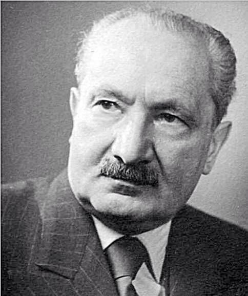

Who Was Martin Heidegger?
Martin Heidegger was a German philosopher, born in 1889 in the small Catholic town of Messkirch, who became one of the most influential and most controversial thinkers of the twentieth century. Trained initially in theology before turning to philosophy, Heidegger spent most of his academic career at the University of Freiburg and the University of Marburg, where he developed a distinctive method of phenomenological inquiry aimed at recovering what he considered the most fundamental and most neglected question in the history of Western thought: the question of the meaning of Being itself.
Heidegger's central philosophical achievement, presented in his 1927 masterwork Being and Time, was to argue that Western philosophy since Plato had persistently overlooked the question of what it means for anything to be at all, instead focusing on beings and their properties while leaving Being itself unexamined. To reopen this question, Heidegger undertook a detailed phenomenological analysis of human existence, which he termed Dasein, arguing that human beings possess a distinctive relationship to Being that makes them the appropriate starting point for ontological inquiry.
Heidegger's philosophy is equally significant, and equally contested, for reasons extending beyond the purely academic. In 1933, shortly after the Nazi seizure of power, Heidegger joined the Nazi Party and accepted the rectorship of the University of Freiburg, a period during which he actively supported the Nazification of German university life. Although he resigned the rectorship after roughly a year, his party membership continued until the end of the Second World War, and later publications of his private notebooks revealed antisemitic remarks that have significantly complicated scholarly assessment of his philosophical legacy.
Despite, and in some ways entangled with, this troubling political history, Heidegger's philosophical influence has been immense. His analysis of human existence, authenticity, anxiety, and mortality decisively shaped the development of French existentialism through thinkers such as Jean-Paul Sartre, while his later reflections on technology, art, and language influenced subsequent movements including hermeneutics, deconstruction, and various strands of postmodern thought. Few twentieth-century philosophers have proven simultaneously so widely read and so persistently controversial.
Understanding Heidegger therefore requires holding together two distinct but related tasks: engaging seriously with the philosophical substance of his inquiry into Being, Dasein, and authenticity, while also reckoning honestly with his political choices and their disputed relationship to his thought. This dual approach, rather than either dismissing his philosophy outright or setting his politics aside as irrelevant, is now the standard approach among scholars seeking to understand his enduring and deeply contested place in the history of philosophy.
Martin Heidegger: Quick Facts
- Full name — Martin Heidegger
- Born — September 26, 1889, Messkirch, Grand Duchy of Baden, German Empire
- Died — May 26, 1976, Freiburg im Breisgau, West Germany
- Philosophical tradition — Phenomenology, existential ontology, hermeneutics
- Known for — Being and Time, the question of Being, Dasein, authenticity, the philosophy of technology
- Central concept — The question of the meaning of Being (die Seinsfrage)
- Key influences — Edmund Husserl, Aristotle, Kant, Kierkegaard, Nietzsche, Hölderlin
- Major works — Being and Time (1927), "What Is Metaphysics?" (1929), "The Origin of the Work of Art" (1935-36), "The Question Concerning Technology" (1954)
- Controversy — Nazi Party member from 1933 to 1945; rector of the University of Freiburg, 1933-34; later "Black Notebooks" contain antisemitic passages
- Historical importance — One of the most influential and most debated philosophers of the twentieth century, central to phenomenology and existentialism
Martin Heidegger's Early Life and Education

Martin Heidegger was born on September 26, 1889, in Messkirch, a small, religiously conservative town in the Grand Duchy of Baden in southwestern Germany. His father worked as a sexton at the local Catholic church, and Heidegger's upbringing was steeped in Catholic ritual, rural tradition, and modest material circumstances that stood in sharp contrast to the more cosmopolitan academic world he would later inhabit as one of Germany's most prominent philosophers.
Heidegger initially trained for the Catholic priesthood, entering a Jesuit novitiate before health difficulties led him to abandon this path and turn instead to the study of theology and later philosophy at the University of Freiburg. His early theological formation left a lasting imprint on his philosophical vocabulary and concerns, including his lifelong preoccupation with finitude, guilt, conscience, and the possibility of an authentic relationship to one's own existence, themes that would later reappear in secularized form throughout Being and Time.
At Freiburg, Heidegger came under the influence of Edmund Husserl, the founder of the phenomenological movement, whose method of rigorous philosophical description of lived experience would decisively shape Heidegger's own approach. Heidegger initially served as Husserl's assistant and was widely regarded as his most promising student and likely philosophical successor, a relationship that would later become strained as Heidegger's own philosophical direction diverged significantly from Husserl's transcendental phenomenology.
Heidegger also studied intensively the history of Western philosophy, developing particular expertise in Aristotle, whose concept of Being and practical wisdom profoundly shaped Heidegger's later ontology, as well as medieval scholastic philosophy, which had formed the subject of his doctoral and postdoctoral (Habilitation) research. This deep grounding in the history of philosophy gave Heidegger's later reinterpretation of the question of Being a distinctive historical depth, presented not as an entirely novel inquiry but as a retrieval of a question he believed the Western tradition had progressively forgotten.
By the early 1920s, Heidegger had begun developing an independent philosophical voice through his lecture courses at Freiburg and later Marburg, where his charismatic and demanding teaching style attracted a remarkable generation of students, including Hannah Arendt, Hans-Georg Gadamer, Herbert Marcuse, and Karl Löwith. This period of intensive lecturing and teaching laid the direct groundwork for the systematic articulation of his philosophy that would appear in 1927 as Being and Time.
Heidegger, Husserl, and the Phenomenological Method
Phenomenology, as developed by Edmund Husserl, proposed a rigorous method for describing the structures of conscious experience as they present themselves, setting aside unexamined theoretical assumptions in order to return, in Husserl's famous phrase, "to the things themselves." Husserl's method sought to establish philosophy as a rigorous science grounded in careful description of the essential structures of consciousness, providing Heidegger with the basic methodological toolkit he would apply to strikingly different philosophical ends.
While Heidegger adopted Husserl's phenomenological method of careful descriptive analysis, he redirected it away from Husserl's primary concern with the structures of transcendental consciousness and toward the question of Being itself. Where Husserl's phenomenology remained oriented around a knowing subject analyzing objects of consciousness, Heidegger argued that this framework already presupposed unexamined answers to more fundamental ontological questions concerning what kind of entity the human being is and what it means for anything to exist at all.
This redirection produced Heidegger's distinctive combination of phenomenology with ontology, the philosophical study of Being. Rather than beginning with consciousness analyzing objects, Heidegger proposed beginning with concrete, practical human existence already immersed in a meaningful world of equipment, relationships, and concerns, a starting point he believed more faithfully captured how human beings actually exist prior to any detached theoretical reflection upon that existence.
The personal and professional relationship between Heidegger and Husserl deteriorated significantly over the course of the 1920s and early 1930s, both because of these growing philosophical disagreements and, more troublingly, because of Heidegger's conduct toward Husserl following the Nazi rise to power. Husserl, who was of Jewish descent, was stripped of his academic privileges under Nazi racial laws, and Heidegger's failure to publicly defend his former mentor, along with the removal of a dedication to Husserl from later editions of Being and Time, remains one of the most frequently cited pieces of evidence in assessments of Heidegger's moral conduct during this period.
Despite this troubled personal history, Heidegger's transformation of phenomenology into a method for ontological inquiry represents one of his most significant and lasting philosophical contributions, decisively shaping the subsequent development of twentieth-century Continental philosophy, including existentialism, hermeneutics, and various later phenomenological traditions that continued to build on, and often critically revise, Heidegger's original reformulation of the phenomenological project.
What Is the Question of Being in Heidegger's Philosophy?
Heidegger opens Being and Time with the claim that the question of the meaning of Being (Sein), though it may initially seem obvious or even meaningless, is in fact the most fundamental question philosophy can ask, and one that the Western philosophical tradition since Plato and Aristotle had progressively forgotten or reduced to unexamined assumptions. Heidegger's entire philosophical project can be understood as an attempt to reopen and rigorously pursue this neglected question.
Heidegger carefully distinguishes between Being and particular beings (Seiendes), a distinction he terms the "ontological difference." Beings are the particular things that exist, such as tables, trees, or persons, and various sciences and everyday practical activities are concerned with such beings and their properties. Being itself, by contrast, is not another being among beings but rather that which makes it possible for any being to show up as existing, present, or meaningful at all, a more fundamental phenomenon Heidegger believed had been systematically overlooked.
Heidegger argued that traditional metaphysics had persistently conflated Being with particular kinds of beings, whether understanding Being as the highest being (as in traditional theology's conception of God), as substance or presence (as in much of the Western metaphysical tradition), or simply assuming the meaning of "to be" as self-evident and unworthy of further philosophical investigation. He termed this tendency "the forgetting of Being" (Seinsvergessenheit), a diagnosis of Western philosophy's central and largely unrecognized failure.
To address this forgetting, Heidegger proposed that any adequate investigation into the meaning of Being must begin with an analysis of the one entity for whom Being is itself an issue: the human being, which Heidegger terms Dasein. Because Dasein possesses an implicit, pre-theoretical understanding of Being simply in virtue of existing and engaging with a world of other beings, Heidegger argued that a careful phenomenological analysis of Dasein's existence could serve as the necessary starting point for reopening the question of Being more generally.
This project, often described as fundamental ontology, was intended by Heidegger as only the first stage of a much larger inquiry that would eventually address the meaning of Being as such, extending beyond the analysis of human existence to a broader historical investigation of how Being has been understood differently across different epochs of Western thought. Although Being and Time remained famously unfinished, with its planned later divisions never published in their originally intended form, this underlying question of Being continued to guide Heidegger's philosophical work for the remainder of his career.
What Is Dasein in Heidegger's Philosophy?
Dasein, a German term literally meaning "being-there," is Heidegger's technical name for the distinctive mode of existence characteristic of human beings. Heidegger deliberately avoided more traditional terms such as "subject," "consciousness," or "человек," believing these terms carried unexamined philosophical baggage that would prejudge the outcome of his analysis before it had properly begun, particularly the assumption that human beings are essentially detached, thinking subjects confronting an external world of objects.
For Heidegger, Dasein's most fundamental characteristic is that its own Being is always an issue for it: unlike a rock or a tree, Dasein does not simply exist with a fixed, predetermined essence but is constantly engaged in interpreting, questioning, and taking a stand on what it means to exist. This structure, which Heidegger calls "existence" in a technical sense, means that Dasein is always ahead of itself, oriented toward possibilities it might take up or fail to take up in the course of living out its life.
Heidegger insists that Dasein is fundamentally being-in-the-world (In-der-Welt-sein), a single unified structure rather than a subject that happens to be located within an external environment. Dasein does not first exist as an isolated consciousness and then subsequently encounter a world of objects; rather, Dasein is always already immersed in a meaningful world of practical concerns, relationships, and equipment, understanding entities primarily in terms of their use and significance within ongoing projects rather than as neutral objects of detached contemplation.
This practical, engaged mode of existence is illustrated through Heidegger's famous distinction between the ready-to-hand (Zuhandenheit) and the present-at-hand (Vorhandenheit). In everyday activity, Heidegger observes, we typically encounter tools and equipment not as objects with neutral properties but as things ready-to-hand, seamlessly integrated into purposeful activity, as when a hammer is used without explicit reflection on its physical properties. Only when equipment breaks down or malfunctions does it become present-at-hand, an object of detached theoretical attention, a shift Heidegger uses to argue that theoretical, detached cognition is derivative of, rather than more basic than, practical engaged coping.
Dasein's existence is further structured by what Heidegger terms Being-with (Mitsein), the claim that Dasein's existence is inherently social and relational rather than originally isolated and only secondarily connected to others. Even solitary existence, Heidegger argues, presupposes a background of shared social meanings, language, and practices inherited from others, a claim that positions Heidegger's analysis of human existence as fundamentally communal even prior to any explicit consideration of particular social relationships or interactions.
Thrownness, Facticity, and Understanding
Heidegger describes Dasein's basic situation through the concept of thrownness (Geworfenheit), the recognition that human beings always find themselves already existing within a particular historical, cultural, linguistic, and bodily situation that they did not choose and cannot fully escape. We do not select our birth, native language, historical era, or initial cultural formation, yet these factors decisively shape the range of possibilities available to us as we go on to interpret and live out our existence.
This condition of thrownness is closely connected to what Heidegger terms facticity, the concrete, given circumstances of Dasein's existence that form the unchosen starting point of any process of self-interpretation. Facticity is not simply a neutral set of facts about a person in the way a scientist might catalog facts about an object; rather, it names the way Dasein always already finds itself emotionally attuned to and burdened by its particular situation, disclosed especially through what Heidegger calls mood or attunement (Befindlichkeit).
Alongside thrownness, Heidegger identifies understanding (Verstehen) as an equally basic structure of Dasein's existence, referring not to abstract theoretical knowledge but to Dasein's practical grasp of its own possibilities for being, its sense of what it can do and become given its particular situation. Understanding, for Heidegger, is always projective, oriented toward future possibilities Dasein might realize, rather than simply passive awareness of a fixed present state of affairs.
These structures combine in what Heidegger terms interpretation (Auslegung), the process by which Dasein's implicit practical understanding becomes explicit and articulated, whether through language, deliberate reflection, or changed practical engagement with the world. This emphasis on interpretation as fundamental to human existence positions Heidegger's philosophy as a significant contribution to hermeneutics, the philosophical study of interpretation, extending the scope of hermeneutic inquiry from the interpretation of texts to the interpretation of existence itself.
Together, thrownness, facticity, mood, and understanding form what Heidegger calls the "existentials," basic structures constitutive of any possible human existence regardless of particular historical or cultural variation. These existentials provide the necessary conceptual groundwork for Heidegger's subsequent and more famous analysis of anxiety, death, and the possibility of authentic versus inauthentic existence, arguably the most widely discussed dimension of his philosophy.
Das Man, Authenticity, and Inauthentic Existence
Heidegger observes that in everyday life, Dasein typically does not interpret its existence and possibilities from a distinctly individual perspective but rather absorbs its self-understanding from the anonymous, average expectations of society at large, which Heidegger terms das Man, usually translated as "the they" or "the One." Under the sway of das Man, Dasein conforms to socially prescribed roles, interprets situations according to conventional public opinion, and avoids confronting the genuinely individual character of its own existence.
Heidegger describes this everyday absorption in das Man as inauthenticity (Uneigentlichkeit), a mode of existence in which Dasein flees from the distinctive, non-transferable character of its own existence into the comfort and anonymity of publicly available interpretations and behaviors. Crucially, Heidegger does not present inauthenticity as a moral failing to be simply overcome through willpower; rather, he treats it as an ever-present structural tendency of human existence that cannot be permanently escaped, only periodically interrupted.
Authenticity (Eigentlichkeit), by contrast, involves Dasein taking explicit ownership of its own existence and possibilities rather than passively accepting the anonymous interpretations offered by das Man. Authentic existence does not require withdrawing from social life or society altogether, since Heidegger insists Dasein's Being-with others is inescapable; rather, authenticity involves a distinctive way of relating to one's inherited social situation, taking explicit responsibility for one's own possibilities rather than simply drifting along conventional paths.
Heidegger argues that the everyday, absorbed condition of inauthentic existence is periodically interrupted by the mood of anxiety (Angst), which Heidegger carefully distinguishes from ordinary fear. Whereas fear is always fear of some particular threatening object or situation within the world, anxiety has no specific object; rather, in anxiety, the familiar meaningfulness of the everyday world momentarily recedes, confronting Dasein directly with the sheer fact of its own existence and the ultimate groundlessness of the meanings it had previously taken for granted.
This experience of anxiety, disorienting and uncomfortable as it is, plays a crucial role in Heidegger's account of authenticity by revealing possibilities for taking a more explicit, owned stance toward one's existence that remain concealed within ordinary absorbed everydayness. Anxiety thus functions for Heidegger not merely as a psychological state to be avoided or treated but as a philosophically significant disclosure of Dasein's fundamental condition, opening the possibility, though never guaranteeing the achievement, of a more authentic relationship to one's own existence.
Being-Toward-Death and Finitude
One of Heidegger's most influential and widely discussed concepts is being-toward-death (Sein-zum-Tode), his analysis of how Dasein's relationship to its own inevitable death decisively shapes the possibility of authentic existence. Heidegger argues that death is not simply a future biological event that will eventually happen to Dasein, comparable to other worldly occurrences, but rather a distinctive possibility that belongs to Dasein's existence from the very beginning, structuring its entire way of being in the world.
Heidegger characterizes death as Dasein's "ownmost," "non-relational," and "not-to-be-outstripped" possibility. Death is ownmost because no one else can die one's own death on one's behalf; it is non-relational because it individualizes Dasein, stripping away the social roles and relationships that typically constitute everyday inauthentic existence; and it is not-to-be-outstripped because it represents the ultimate limit beyond which no further possibilities remain, the possibility of the impossibility of any further existence at all.
In everyday inauthentic existence, Heidegger observes, das Man typically covers over the genuinely individualizing character of death, treating it as a vague, distant, statistically inevitable event that "one" eventually undergoes, a strategy that allows Dasein to evade genuine confrontation with its own finitude. This evasion, Heidegger suggests, is one of the most persistent and effective strategies through which inauthentic everyday existence maintains its comforting, anonymous character.
Authentic being-toward-death, by contrast, involves what Heidegger terms "anticipatory resoluteness" (vorlaufende Entschlossenheit), a mode of existence in which Dasein does not simply await death passively but explicitly anticipates its own finitude as a constant possibility, allowing this anticipation to individualize Dasein and clarify the genuine stakes of its remaining possibilities for existence. This confrontation with mortality, rather than producing despair, is presented by Heidegger as potentially liberating, freeing Dasein from unreflective absorption in das Man's conventional priorities.
Heidegger's analysis of being-toward-death proved enormously influential on subsequent existentialist philosophy, particularly through its emphasis on finitude, individualization, and the transformative potential of confronting mortality directly rather than evading it through comforting illusions or distraction. This theme would be taken up, adapted, and in some cases significantly transformed by later thinkers including Jean-Paul Sartre and Simone de Beauvoir, even as they departed from Heidegger's specifically ontological framing of the question.
Care as the Being of Dasein
Heidegger argues that the unifying structure underlying all of Dasein's various existential characteristics, including thrownness, understanding, and fallenness into das Man, is what he terms care (Sorge). Care, in Heidegger's technical sense, does not refer simply to emotional concern for others but names the fundamental structure of Dasein's existence as always already ahead of itself, already thrown into a particular situation, and always absorbed in dealings with entities encountered within the world.
Heidegger formally defines care as "ahead-of-itself-already-being-in (the world) as being-alongside (entities encountered within the world)," a technical formulation intended to capture the way Dasein's existence integrates future-oriented projection (ahead-of-itself), past-oriented thrownness (already-being-in), and present-oriented practical engagement (being-alongside) into a single unified temporal structure rather than three separate, independent features.
This analysis of care as Dasein's fundamental Being leads directly into Heidegger's broader argument that temporality (Zeitlichkeit) constitutes the deeper meaning underlying care itself. Heidegger argues that the three dimensions of care correspond to the three ecstases of temporality: the future (corresponding to Dasein's projective understanding), the past or "having-been" (corresponding to thrownness), and the present (corresponding to practical engagement with entities), with authentic temporality prioritizing the future over a merely reactive present.
This temporal analysis represented, for Heidegger, the culminating argument of Being and Time's published portion, demonstrating that temporality, rather than presence or substance as traditional metaphysics had assumed, constitutes the deepest meaning of Dasein's Being. Heidegger intended this analysis of Dasein's temporality to serve as the foundation for a further, never-completed investigation into the meaning of Being in general through what he called the "horizon" of time.
Although the planned continuation of Being and Time, which would have extended this temporal analysis into a full historical investigation of Being, was never published in its originally intended form, the concept of care remains one of Heidegger's most philosophically significant contributions, offering an influential alternative to traditional philosophical accounts of human existence grounded in rational cognition, will, or consciousness considered independently of practical, temporal, and emotional engagement with a meaningful world.
Being and Time: Structure and Significance
Being and Time (Sein und Zeit), published in 1927, remains Heidegger's most influential and widely studied work, establishing him immediately as one of the most significant philosophers of his generation. The book was originally conceived as the first part of a much larger project, with a planned second division addressing the history of Western ontology through critical engagement with figures including Kant, Descartes, and Aristotle, a continuation that Heidegger never completed in its originally intended form.
The published portion of Being and Time is divided into two major divisions: the first providing what Heidegger calls the "preparatory fundamental analysis of Dasein," covering being-in-the-world, everydayness, das Man, and the ready-to-hand/present-at-hand distinction; and the second extending this analysis through the themes of death, conscience, guilt, resoluteness, and temporality, culminating in Heidegger's argument that temporality constitutes the meaning of Dasein's Being as care.
The work's difficult, densely technical prose, filled with numerous neologisms and unconventional uses of ordinary German words, has made it notoriously challenging even for professional philosophers, yet this distinctive language was deliberate on Heidegger's part, reflecting his conviction that ordinary philosophical vocabulary carried unexamined metaphysical assumptions that needed to be dismantled in order to properly reopen the question of Being.
Being and Time's immediate reception was significant within German academic philosophy, and it quickly established Heidegger's reputation as Husserl's most important successor, though the relationship between the two thinkers would soon deteriorate considerably, both philosophically and, following the Nazi rise to power, personally and politically, in ways that would permanently complicate their historical association.
The book's influence rapidly extended beyond Germany, decisively shaping the subsequent development of French existentialism through readers including Jean-Paul Sartre, who drew heavily, though selectively and critically, on Heidegger's analysis of Dasein, anxiety, and authenticity in developing his own existentialist philosophy. This reception history illustrates how Being and Time, despite remaining formally unfinished, nonetheless exercised a complete and independently significant influence on twentieth-century philosophy.
Heidegger's Rectorship and Involvement with National Socialism
In April 1933, shortly after the Nazi seizure of power, Heidegger was elected rector of the University of Freiburg, and the following month he formally joined the Nazi Party. In his rectoral inaugural address, titled "The Self-Assertion of the German University," Heidegger articulated a vision of the university's role that closely aligned philosophical language concerning historical destiny and communal self-assertion with the political aims of the emerging Nazi regime, actively supporting the Nazification of German academic institutions during his tenure.
During his roughly one-year rectorship, Heidegger implemented policies consistent with Nazi ideology within the university, including support for the exclusion of Jewish faculty members under newly enacted racial laws, and he delivered several public addresses explicitly endorsing Hitler's leadership and the broader political transformation underway in Germany. This period represents the most direct and undisputed evidence of Heidegger's active institutional complicity with National Socialism, distinct from more contested questions concerning the deeper relationship between his philosophy and his politics.
Heidegger resigned the rectorship in April 1934, reportedly due to conflicts with Nazi education officials over specific policy matters rather than any fundamental break with National Socialist ideology, and he continued to maintain his Nazi Party membership until the party's dissolution at the end of the Second World War in 1945. Following the war, Heidegger was subject to a denazification tribunal, which resulted in a temporary teaching ban, and he offered only limited, widely criticized public reflection on his political conduct during the Nazi period for the remainder of his life.
Scholarly assessment of the relationship between Heidegger's Nazi involvement and his philosophy remains deeply contested. Some scholars argue that his political choices represented a contingent personal failing separable from the philosophical substance of Being and Time and his broader ontological project; others argue that concepts within his philosophy, including his emphasis on historical destiny, communal authenticity, and resoluteness, bear a more troubling structural affinity with the nationalist and authoritarian currents he embraced during this period.
This controversy intensified significantly following the posthumous publication, beginning in 2014, of Heidegger's private "Black Notebooks" (Schwarze Hefte), philosophical journals spanning several decades that contain explicitly antisemitic passages linking Heidegger's critique of modern technology and "machination" to conspiratorial characterizations of Jewish influence. These revelations have prompted extensive renewed scholarly debate about the depth and duration of Heidegger's antisemitism and its relationship to his broader philosophical concerns, a debate that continues actively within contemporary philosophical scholarship.
The Kehre: Heidegger's Later "Turn"
Scholars commonly distinguish between an "early Heidegger," centered on the systematic phenomenological analysis of Dasein found in Being and Time, and a "later Heidegger," reflecting a significant shift in style, method, and emphasis that Heidegger himself acknowledged and that has come to be known as the Kehre, or "turn." This shift is generally dated to the years following the abandonment of the originally planned continuation of Being and Time in the 1930s.
Where the early Heidegger approached the question of Being through a systematic, quasi-transcendental analysis of human Dasein, the later Heidegger increasingly approached Being through more historically oriented, meditative reflection on the "history of Being" (Seinsgeschichte), tracing how different epochs of Western civilization, from ancient Greece through modernity, have understood and related to Being in characteristically different, historically specific ways.
The later Heidegger's philosophical style also shifted markedly, moving away from the systematic argumentative structure of Being and Time toward a more poetic, allusive, and deliberately non-systematic mode of writing, increasingly engaging with poetry, particularly the work of Friedrich Hölderlin, as a privileged medium for disclosing truths about Being that Heidegger believed conceptual, argumentative philosophy alone could not adequately express.
Central to this later phase was Heidegger's growing concern with language, which he increasingly described using the formula "language is the house of Being," suggesting that human access to Being is fundamentally mediated through language rather than achieved through detached theoretical cognition independent of linguistic and historical context. This emphasis on language significantly influenced Heidegger's subsequent engagement with poetry, art, and what he termed the essence of technology.
While Heidegger himself sometimes resisted describing this shift as a sharp philosophical break, emphasizing instead underlying continuity in his fundamental concern with the question of Being, most scholars nonetheless treat the distinction between early and later Heidegger as a useful, if imperfect, framework for understanding the significant differences in method, style, and emphasis that characterize the two phases of his long and philosophically prolific career.
The Origin of the Work of Art

In his influential 1935-36 lecture and essay "The Origin of the Work of Art" ("Der Ursprung des Kunstwerkes"), Heidegger developed an account of art as a privileged site for the disclosure of truth, sharply distinct from conventional aesthetic theories that treat artworks primarily as objects of subjective pleasure, formal beauty, or expressions of an artist's inner psychological state.
Central to this essay is Heidegger's analysis of the artwork as the "setting-to-work of truth," involving a dynamic interplay between what he terms earth and world. World refers to the meaningful, historically disclosed context of significance within which a people understands its existence, while earth refers to the self-concealing, material foundation, such as stone, color, or sound, that both supports and resists complete disclosure within the artwork, producing what Heidegger describes as an ongoing "strife" between concealment and unconcealment.
Heidegger illustrates this analysis through an extended discussion of a painting by Vincent van Gogh depicting a pair of peasant shoes, arguing that the artwork does not merely represent an object but discloses an entire world of peasant existence, including labor, hardship, and connection to the earth, that would otherwise remain implicit and unarticulated. This example, though later criticized by art historian Meyer Schapiro for factual inaccuracies concerning the painting's actual subject, remains central to Heidegger's broader argument about art's disclosive power.
For Heidegger, the significance of great art extends beyond individual aesthetic appreciation to the founding of historical worlds themselves, as when a Greek temple, in his analysis, does not merely depict but actively establishes and sustains the meaningful world of ancient Greek religious and communal life surrounding it. This account positions art as ontologically significant, a site where truth as unconcealment (aletheia) actively happens rather than a domain of merely subjective aesthetic response.
Heidegger's philosophy of art proved significantly influential within subsequent aesthetic theory and art criticism, offering an alternative to both formalist theories focused narrowly on artistic technique and expressivist theories focused on artistic intention, instead situating artworks within his broader ontological concern with truth, historical disclosure, and the relationship between concealment and unconcealment central to his later philosophy of Being.
Heidegger's Philosophy of Technology and Gestell
Heidegger's 1954 essay "The Question Concerning Technology" ("Die Frage nach der Technik") presents one of the most influential philosophical analyses of modern technology, arguing that technology should not be understood merely as a neutral collection of tools and instruments but as a particular historical mode of "revealing," a way in which Being discloses itself to human beings during the modern epoch, with significant implications for how humanity comes to understand itself, nature, and other entities.
Central to this analysis is Heidegger's concept of Gestell, often translated as "enframing," which names the essence of modern technology as a mode of revealing that discloses all entities, including nature and even human beings themselves, as a "standing-reserve" (Bestand) of resources to be ordered, optimized, and made available for further use. Under the sway of Gestell, a river is disclosed primarily as a potential source of hydroelectric power rather than encountered in its own independent being, illustrating what Heidegger considers a distinctively reductive and dangerous mode of relating to the world.
Heidegger is careful to distinguish this ontological analysis of technology's essence from a simple moral condemnation of particular technological devices or a call for wholesale rejection of modern technology. He argues instead that the fundamental danger of Gestell lies in its tendency to conceal alternative, non-technological modes of revealing, foreclosing other possible ways of relating to Being and risking the reduction of human beings themselves to mere resources within technological systems of optimization and control.
Despite identifying this danger, Heidegger famously suggests, drawing on Hölderlin, that "where the danger is, grows the saving power also," implying that a proper philosophical understanding of technology's essence might itself open the possibility of a different, less reductive relationship to Being, one Heidegger associates with art, poetic thinking, and a more receptive, releasing stance he terms Gelassenheit, or "releasement," toward both technology and Being more broadly.
Heidegger's philosophy of technology has proven remarkably influential across environmental philosophy, media theory, and subsequent critical analyses of digital and information technologies, providing conceptual resources for examining how contemporary technological systems shape human self-understanding and our relationship to the natural world, even as critics have questioned the practical political implications, or absence thereof, of Heidegger's characteristically abstract and meditative approach to these urgent contemporary concerns.
Language, Poetry, and Hölderlin
The later Heidegger developed an increasingly central concern with language, arguing against the conventional view that language functions primarily as a neutral instrument for communicating pre-existing thoughts between independently constituted subjects. Instead, Heidegger argued that language itself actively shapes and discloses the world available to human understanding, famously proposing that human beings do not simply speak language but are in a more fundamental sense spoken by it.
Within this broader concern with language, Heidegger developed a particularly intense and sustained engagement with the poetry of Friedrich Hölderlin, the eighteenth-century German Romantic poet whose work Heidegger considered uniquely significant for disclosing the essential relationship between poetry, homeland, the sacred, and the historical destiny of the German people, themes Heidegger explored across numerous lecture courses devoted specifically to Hölderlin's poetry.
Heidegger argued that authentic poetry, exemplified for him by Hölderlin, performs a disclosive function analogous to that identified in his earlier philosophy of art, actively founding and articulating a historical world rather than merely describing or expressing pre-existing subjective experience. This elevated conception of poetry's philosophical significance distinguished Heidegger's approach sharply from conventional literary criticism focused on formal or biographical analysis.
Heidegger's intensive focus on Hölderlin during and after the Nazi period, with its associated themes of German historical destiny and homeland, has itself become a subject of scholarly controversy, with some critics arguing that Heidegger's readings of Hölderlin cannot be fully separated from the nationalist concerns that also informed his political engagement during the 1930s, complicating any straightforward separation between Heidegger's philosophy of language and poetry and his broader political commitments during this period.
Regardless of these controversies, Heidegger's philosophy of language and his engagement with poetry significantly influenced subsequent hermeneutic philosophy, particularly through his student Hans-Georg Gadamer, as well as later Continental philosophy's broader turn toward examining the constitutive role of language in shaping human thought, culture, and historical self-understanding, a legacy that persists across numerous contemporary philosophical and literary theoretical traditions.
Heidegger's Influence on Sartre and Existentialism
Heidegger's analysis of Dasein, anxiety, authenticity, and being-toward-death exercised a profound influence on the development of French existentialism, particularly through Jean-Paul Sartre, who encountered Heidegger's work during the 1930s and drew extensively on Heideggerian concepts and vocabulary in developing his own major philosophical work, Being and Nothingness (1943).
Sartre adapted numerous Heideggerian themes, including anxiety, authenticity, and the analysis of everyday absorption in social roles, while significantly transforming Heidegger's framework through his own emphasis on radical human freedom and the famous formula that "existence precedes essence," positioning human consciousness as fundamentally free and self-determining in a manner that diverged significantly from Heidegger's own more historically and ontologically oriented framing of human existence.
Heidegger himself explicitly and emphatically rejected the existentialist label frequently applied to his philosophy, articulating this rejection most clearly in his 1947 "Letter on Humanism," written partly in response to Sartre's popular lecture "Existentialism Is a Humanism." Heidegger argued that Sartre's humanistic reading fundamentally misunderstood his project, wrongly centering human subjectivity and freedom as the starting point of philosophy rather than treating human existence as significant primarily because of its relationship to the more fundamental question of Being.
This disagreement reflects a deeper philosophical divergence: while Sartre's existentialism remained broadly humanist, treating human consciousness and freedom as foundational, Heidegger's later philosophy increasingly de-centered human subjectivity, treating Dasein's significance as deriving from its relationship to Being and the historical destiny of Being's disclosure rather than from any inherent human freedom or dignity considered independently of this broader ontological framework.
Despite Heidegger's explicit rejection of the existentialist label, his influence on the broader existentialist movement remains undeniable, extending beyond Sartre to other significant figures including Simone de Beauvoir, Maurice Merleau-Ponty, and Albert Camus, each of whom engaged, whether critically or appreciatively, with Heideggerian themes concerning finitude, authenticity, and the structure of human existence in developing their own distinctive philosophical positions.
Heidegger's Influence on Gadamer, Derrida, and Later Philosophy
Beyond existentialism, Heidegger's philosophy exercised enormous influence on subsequent hermeneutic philosophy through his student Hans-Georg Gadamer, whose major work Truth and Method substantially extended Heidegger's insights concerning the historically situated, interpretive character of human understanding into a comprehensive philosophical hermeneutics addressing questions of textual interpretation, tradition, and historical understanding more broadly.
Heidegger's critique of Western metaphysics as a "forgetting of Being," along with his deconstruction of traditional philosophical vocabulary and his attention to the way language shapes thought, significantly influenced the development of deconstruction through French philosopher Jacques Derrida, who both drew upon and critically extended Heidegger's project, particularly Heidegger's notion of the "destruction" (Destruktion) of the history of ontology, which Derrida transformed into his own distinctive practice of deconstructive reading.
Heidegger's later reflections on technology, dwelling, and the relationship between human beings and the natural world have also proven significant for subsequent environmental philosophy and ecological thought, with some environmental philosophers drawing on Heidegger's critique of technological Gestell to develop alternative, less exploitative conceptions of humanity's relationship to nature, though this appropriation remains complicated by Heidegger's own troubling political history.
Heidegger's influence extends further still into fields including psychiatry and psychotherapy, through the movement known as Daseinsanalysis, which applied Heideggerian concepts to psychological and therapeutic practice, as well as into architectural theory, through Heidegger's influential essay "Building Dwelling Thinking," which has shaped subsequent discussions of the phenomenology of place, home, and the built environment among architects and architectural theorists.
This remarkably broad and continuing influence across philosophy, literary theory, psychology, architecture, and environmental thought illustrates the scope of Heidegger's philosophical significance, even as scholars in each of these fields continue to grapple with the difficult question of how to engage productively with his philosophical insights while remaining clear-eyed about the troubling political history with which they remain historically entangled.
Criticisms and Ongoing Debates About Heidegger's Legacy
Heidegger's philosophy has faced sustained criticism on multiple fronts throughout the decades since Being and Time's publication. Analytic philosophers have frequently criticized his deliberately difficult, neologism-laden prose style as obscurantist and unnecessarily impenetrable, while some critics have questioned whether his elaborate technical vocabulary genuinely advances philosophical understanding or merely obscures relatively straightforward claims behind an intimidating apparatus of specialized terminology.
The most serious and enduring criticism concerns, of course, Heidegger's involvement with National Socialism, a controversy that raises difficult questions extending beyond simple historical condemnation of his personal conduct to more challenging questions about whether and how specific philosophical concepts within his work, including historical destiny, authentic communal existence, and resoluteness, might bear structural affinities with the nationalist and authoritarian ideology he embraced, particularly during the early 1930s.
The publication of the Black Notebooks has intensified this debate considerably, with scholars including Emmanuel Faye arguing that Heidegger's antisemitism was more deeply woven into his philosophical framework than previously recognized, while other scholars maintain that his core ontological insights, particularly those concerning Dasein, temporality, and the question of Being, remain philosophically valuable and separable, at least in significant part, from his troubling political commitments and personal moral failings.
Additional criticism has focused on Heidegger's notoriously limited and evasive postwar public reflection on his Nazi-era conduct, including his famous silence regarding the Holocaust in most public statements, a reticence that many scholars and readers have found deeply troubling given the philosophical seriousness with which Heidegger approached questions of conscience, guilt, and authentic responsibility within his own earlier philosophical framework.
These ongoing debates illustrate that engaging responsibly with Heidegger's philosophy requires neither uncritical celebration of his undeniable philosophical originality nor wholesale dismissal of his work on the basis of his political history, but rather a careful, historically informed engagement that takes both dimensions seriously, a balance contemporary Heidegger scholarship continues to negotiate without full resolution or consensus.
Heidegger and Sartre: Ontology vs. Humanism
Comparing Heidegger and Sartre illuminates a fundamental divergence within twentieth-century Continental philosophy concerning the proper starting point and ultimate aim of philosophical inquiry into human existence. Both thinkers developed influential phenomenological analyses of anxiety, authenticity, and finitude, yet they drew sharply different philosophical conclusions from these shared analytical starting points, reflecting deeper disagreements about the fundamental nature and significance of human freedom.
Sartre's existentialism places human freedom and consciousness at the absolute center of philosophy, famously declaring that "existence precedes essence" to capture his view that human beings possess no predetermined nature and must therefore create their own values and identity through free choice, unconstrained by any prior essence, divine plan, or objective moral order, resulting in a philosophy that assigns human consciousness a kind of absolute, radical freedom.
Heidegger, by contrast, consistently resisted centering his philosophy on human freedom or consciousness as ultimate starting points, insisting instead that Dasein's significance derives from its relationship to the more fundamental question of Being, a question Heidegger considered logically and philosophically prior to questions of human freedom, values, or ethical action, a position he articulated explicitly in rejecting the humanist framework through which Sartre had popularized existentialist philosophy.
This disagreement carries significant implications for each philosopher's treatment of thrownness and facticity. While both acknowledge that human beings find themselves within unchosen circumstances, Sartre tends to minimize the constraining force of facticity, emphasizing instead the individual's radical freedom to interpret and transcend given circumstances through choice, while Heidegger's analysis assigns thrownness a more constitutive and binding role in shaping Dasein's possibilities, resistant to any simple narrative of unconstrained self-creation.
The comparison between Heidegger and Sartre therefore illustrates two significantly different trajectories that phenomenological analysis of human existence could take: one oriented toward questions of Being, history, and language considered largely independent of human willing, and another oriented toward questions of freedom, responsibility, and self-creation considered as the defining and irreducible feature of human consciousness, a divergence that continues to structure debates within existentialist and phenomenological philosophy today.
Heidegger and Husserl: Two Phenomenologies
The philosophical relationship between Heidegger and Edmund Husserl reveals a significant transformation within the phenomenological movement itself, from Husserl's original transcendental phenomenology, centered on the careful description of consciousness and its objects, toward Heidegger's existential and ontological reformulation of phenomenological method, centered instead on the practical, engaged structures of everyday human existence.
Husserl's phenomenology retained a broadly Cartesian starting point, beginning analysis from the structures of a transcendental consciousness that constitutes meaning through intentional acts directed toward objects, a framework Husserl believed could establish philosophy as a rigorous foundational science capable of grounding all other forms of knowledge through careful descriptive analysis of consciousness's essential structures.
Heidegger rejected this starting point as already presupposing unexamined ontological assumptions, arguing that Husserl's consciousness-centered framework implicitly treated human beings as detached theoretical observers rather than as always already practically engaged, historically situated beings immersed in a meaningful world prior to any explicit theoretical reflection, a fundamental methodological disagreement that ultimately proved irreconcilable between the two thinkers.
This philosophical disagreement was compounded by the troubling personal and political dimension of their relationship following the Nazi rise to power, when Husserl, as a person of Jewish descent, was stripped of his academic position and privileges under Nazi racial laws, while Heidegger, his former student and designated successor, failed to publicly defend him and removed the dedication to Husserl that had originally appeared in early editions of Being and Time.
Despite this fraught history, both philosophical and personal, Husserl's foundational contribution to phenomenological method remains essential background for understanding Heidegger's own philosophical project, even as Heidegger's radical reformulation of phenomenology into existential ontology represents one of the most significant and consequential transformations within the phenomenological tradition, decisively shaping its subsequent development throughout twentieth-century Continental philosophy.
Heidegger's Later Life and Death
Following his denazification tribunal and temporary teaching ban after the Second World War, Heidegger gradually resumed academic activity, eventually returning to limited teaching at the University of Freiburg while increasingly retreating to his rural mountain hut in Todtnauberg, in Germany's Black Forest region, which became closely associated with his later philosophical style and his professed preference for rural, rooted existence over what he considered the rootless character of modern urban and technological life.
Heidegger continued to write and lecture prolifically throughout the postwar decades, producing influential essays on technology, art, language, and poetry while largely avoiding direct, sustained public engagement with the moral and political questions raised by his Nazi-era conduct, a reticence that remained a persistent source of controversy and disappointment among many readers, students, and critics throughout the remainder of his life.
In a notable 1966 interview with the German magazine Der Spiegel, conducted with the stipulation that it not be published until after his death, Heidegger offered some of his most extensive postwar reflections on his political involvement, though many readers found his explanations, including his characterization of his motivations during the rectorship period, insufficiently critical and largely unsatisfying as a genuine reckoning with his conduct.
Despite ongoing controversy surrounding his political history, Heidegger's academic reputation and influence remained substantial throughout his later decades, and he continued to attract significant scholarly attention and a steady stream of visitors and correspondents from across the philosophical world, including thinkers who, despite serious reservations about his political past, considered his philosophical contributions too significant to ignore.
Martin Heidegger died on May 26, 1976, in Freiburg im Breisgau, at the age of eighty-six, and was buried in his hometown of Messkirch. His death marked the end of a career that had produced one of the most philosophically significant and simultaneously one of the most morally troubling bodies of work in twentieth-century philosophy, a dual legacy that continues to shape ongoing scholarly and public debate about his place in the history of thought.
Why Is Martin Heidegger Important?
Martin Heidegger is important because he fundamentally reoriented twentieth-century philosophy's approach to the question of Being, arguing that Western metaphysics had persistently neglected this most basic philosophical question and developing an original phenomenological method for reopening it through careful analysis of concrete, practical human existence rather than abstract theoretical speculation.
His analysis of Dasein, authenticity, anxiety, and being-toward-death provided enormously influential conceptual resources for subsequent existentialist philosophy, even as Heidegger himself resisted the existentialist label, decisively shaping how later thinkers including Sartre, Beauvoir, and Camus approached questions of human finitude, freedom, and authentic existence within their own distinct philosophical frameworks.
Heidegger's later philosophy of technology, art, and language continues to offer significant resources for contemporary reflection on humanity's relationship to modern technological systems, the natural environment, and the disclosive power of artistic and poetic language, questions that have only grown more pressing as digital and technological systems increasingly mediate human experience and self-understanding in the decades since Heidegger's death.
At the same time, Heidegger's importance cannot be separated from the serious and ongoing scholarly reckoning with his Nazi-era political conduct and the antisemitic content revealed in his Black Notebooks, a reckoning that has become an essential and inseparable part of how contemporary philosophy engages with his work, illustrating the genuinely difficult ethical questions raised when a philosopher's undeniable intellectual significance coexists with deeply troubling moral and political choices.
King's enduring... [continued below]
Martin Heidegger's Main Philosophical Ideas
Heidegger's philosophy can be understood through several interconnected ideas concerning Being, Dasein, authenticity, temporality, and the history of metaphysics. These concepts form a unified philosophical project in which the analysis of human existence serves the deeper aim of reopening philosophy's most fundamental and most neglected question.
The Question of Being
The question of Being is Heidegger's central and guiding concern, the claim that Western philosophy has forgotten to ask what it means for anything to exist at all, conflating Being with particular beings or treating its meaning as self-evident rather than subjecting it to rigorous philosophical investigation.
Dasein and Being-in-the-World
Dasein names Heidegger's analysis of distinctly human existence as always already practically engaged with a meaningful world, rejecting the traditional picture of a detached subject confronting external objects in favor of a unified structure of being-in-the-world.
Authenticity and Das Man
Heidegger's distinction between authenticity and absorption in das Man describes two modes of relating to one's own existence, one conforming to anonymous social convention and one involving explicit, owned engagement with one's own individual possibilities, particularly in light of mortality.
Being-Toward-Death
Being-toward-death describes Heidegger's influential analysis of how confronting one's own finitude, rather than evading it, individualizes Dasein and clarifies the genuine stakes of its remaining possibilities for authentic existence.
Technology and Gestell
Heidegger's later concept of Gestell, or enframing, describes modern technology as a historically specific mode of revealing that discloses entities as mere standing-reserve, raising questions about humanity's relationship to nature, resources, and Being itself under conditions of technological modernity.
Martin Heidegger Explained Simply
Heidegger's central philosophical question can be stated simply: what does it mean for anything to exist at all? His answer begins not with abstract speculation but with careful description of concrete human existence, arguing that human beings, whom he calls Dasein, possess a distinctive, practical understanding of Being simply by virtue of living, acting, and caring about their own existence.
His central method was phenomenological description of Dasein's everyday existence: how we are thrown into particular circumstances we did not choose, how we understand ourselves largely through inherited social roles, how anxiety and death can interrupt this everyday absorption, and how confronting our own finitude opens the possibility, though never the guarantee, of a more authentic relationship to our own existence.
- Question — What does it mean to be? Heidegger argues Western philosophy forgot to ask this most basic question, conflating Being with particular beings rather than investigating it directly.
- Starting point — Dasein: Rather than beginning with abstract consciousness, Heidegger begins with concrete human existence as always already practically engaged in a meaningful world.
- Everyday existence — Das Man: Most of the time, Dasein absorbs its self-understanding from anonymous social convention rather than taking explicit ownership of its own individual existence.
- Interruption — Anxiety and death: Anxiety and the confrontation with one's own mortality can interrupt this everyday absorption, individualizing Dasein and opening the possibility of authentic existence.
- Later concern — Technology and art: Heidegger's later philosophy turned to how modern technology reduces the world to a resource to be optimized, and how art and poetry offer an alternative, more disclosive relationship to Being.
Put very simply, Heidegger's philosophy can be understood as a sustained attempt to make the question "what does it mean to be?" strange and urgent again, after centuries in which philosophy had treated the answer as obvious. Whether analyzing everyday tool use, anxiety, death, art, or technology, Heidegger consistently returns to this single guiding question as the deepest concern underlying all of his diverse philosophical investigations.
This is why Heidegger's philosophy connects several major areas of twentieth-century thought. His analysis of Dasein explains his existential phenomenology, his theory of authenticity explains his influence on existentialism, his account of language and history explains his influence on hermeneutics, and his critique of technology explains his continuing relevance to contemporary debates about modern life. Together, these ideas form the structure of Heidegger's complex and enduringly contested philosophical legacy.
Frequently Asked Questions About Martin Heidegger
Who was Martin Heidegger?
Martin Heidegger was a German philosopher, best known for his 1927 work Being and Time, who is widely regarded as one of the most influential and controversial philosophers of the twentieth century.
What is Martin Heidegger famous for?
Heidegger is famous for Being and Time, his analysis of Dasein and authenticity, his phenomenological method, his later philosophy of technology and art, and his controversial rectorship under the Nazi regime in 1933-34.
What is Dasein in Heidegger's philosophy?
Dasein, literally "being-there," is Heidegger's term for the distinctive mode of human existence, the entity for whom its own Being is always an issue and who exists thrown into a world of meaningful involvements rather than as a detached observing subject.
Was Martin Heidegger a Nazi?
Yes. Heidegger joined the Nazi Party in May 1933 and served as rector of the University of Freiburg, actively supporting Nazification of the university during that period, and his posthumously published Black Notebooks contain antisemitic passages that have deepened scholarly debate about the relationship between his politics and his philosophy.
What is the Kehre or "turn" in Heidegger's thought?
The Kehre refers to a shift in Heidegger's later philosophy away from the systematic analysis of Dasein found in Being and Time toward a more meditative, historically attuned approach centered on the history of Being, language, art, and technology.
What is the difference between Heidegger and Sartre?
Sartre adapted Heidegger's concepts into a humanist existentialism centered on radical human freedom, while Heidegger explicitly rejected this reading in his Letter on Humanism, insisting his project concerned the question of Being itself rather than human subjectivity or freedom as first principles.
Did Heidegger finish Being and Time?
No. Being and Time was originally planned as the first part of a larger project, and the intended later divisions addressing the history of Western ontology were never completed or published in their originally intended form.
What is Gestell in Heidegger's philosophy of technology?
Gestell, or "enframing," is Heidegger's term for the essence of modern technology as a mode of revealing that discloses entities, including nature and human beings, as a standing-reserve of resources to be optimized and used.
Related Thinkers and Phenomenological Philosophers
Martin Heidegger belongs to a rich tradition of phenomenological and existential philosophy. Explore thinkers who developed related approaches to Being, existence, language, and human finitude.
Philosophy Branches Connected to Heidegger
Heidegger's philosophy is especially connected with metaphysics, epistemology, and the philosophy of mind. His investigation of Being and existence also raises important questions central to ethics and aesthetics.
Why Martin Heidegger Still Matters
Martin Heidegger remains one of the most important, and one of the most contested, figures in twentieth-century philosophy because of the depth of his investigation into the question of Being and the troubling complexity of his political history.
His analysis of Dasein, authenticity, technology, and language created a powerful and enduringly influential framework for thinking about human existence, even as his conduct during the Nazi period demands continued honest scholarly reckoning.
Whether studied as a phenomenologist, an existential thinker, or a philosopher of technology and art, Heidegger's work continues to occupy a central, if deeply contested, position in discussions of Being, existence, and the challenges of modern technological life.
Explore Great Philosophers